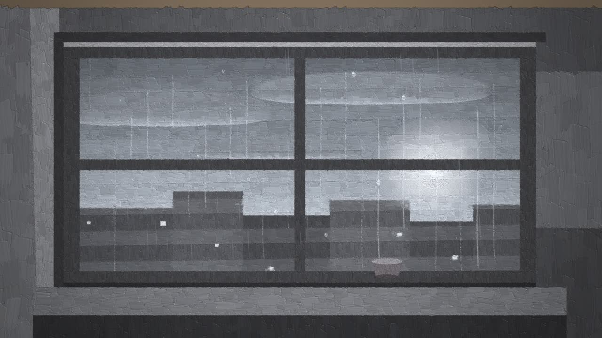
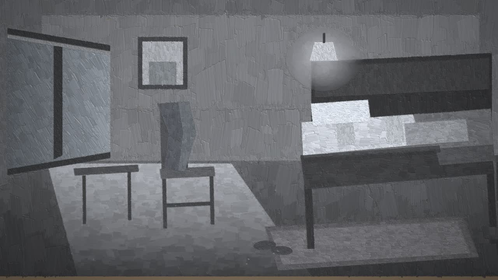
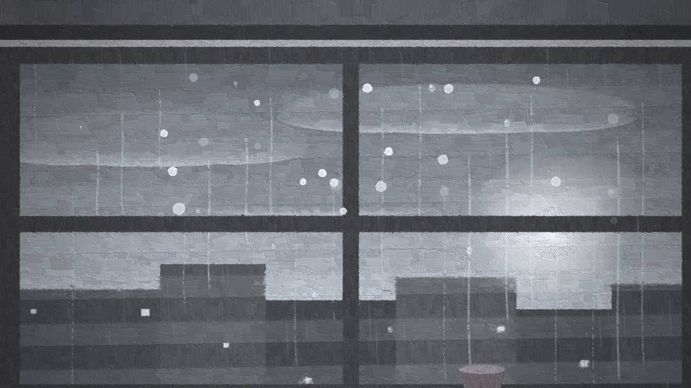
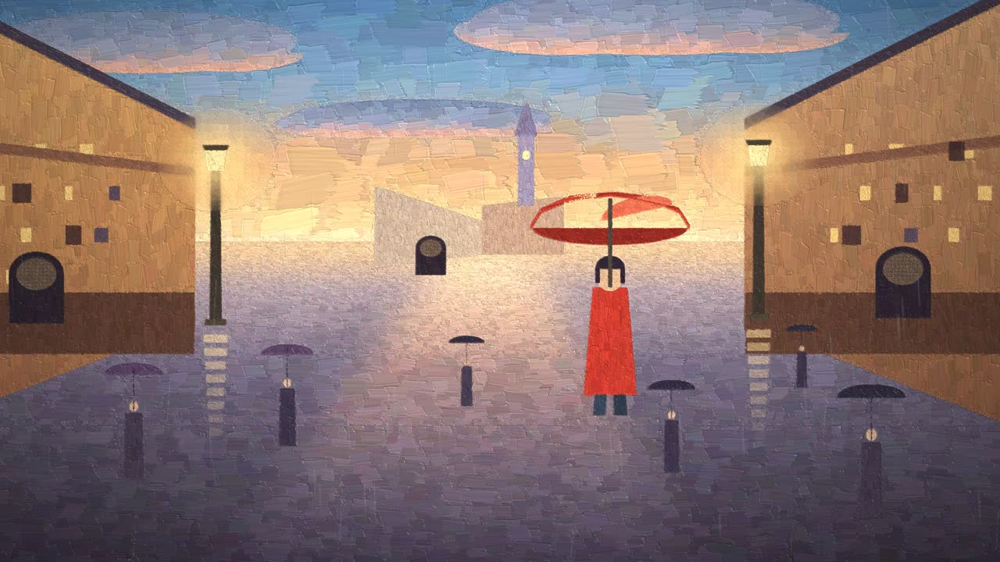
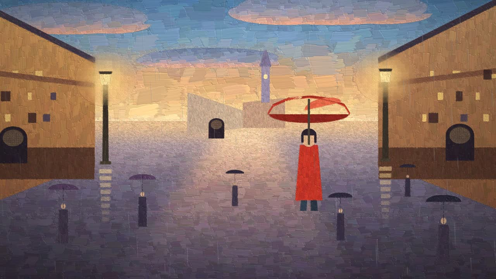
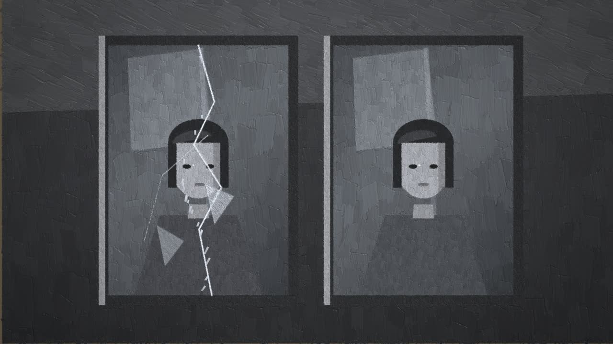
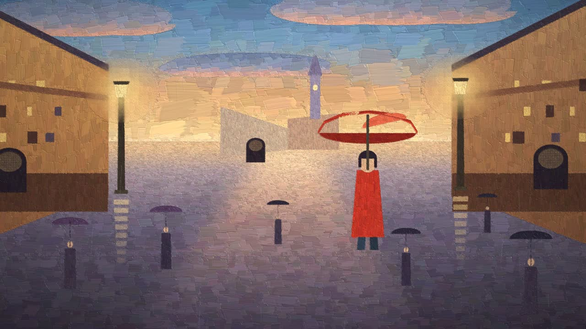
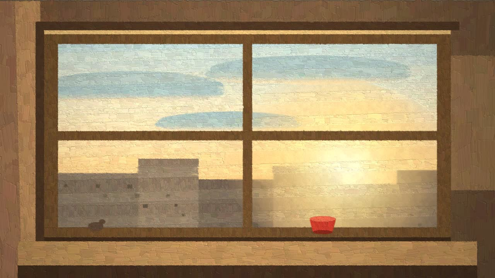

Storyboard · 8 shots · look test
《于是》— 分镜与风格试验
油画厚涂 · 郑润泽《于是》3:52.83 · 这些帧由绘制代码渲染（早期的 look test，人物动画是之后才加进代码的）。
整片只讲一件事：颜色走了，又回来一部分。开场是一幅几乎全灰的画，只有窗外那盏路灯是暖的；副歌第一句，刮刀从她站的地方开始把整座广场重新刷上色；桥段颜色退回去，镜子裂开；尾声同一扇窗，雨停了、天亮了，画是暖的——但房间里已经没有她。
01八个镜头

S100:00 – 00:14ECU · 极慢推
前奏整幅画被一笔一笔画出来，第一滴雨落下
钩子在前 3 秒：不是先出片名，而是世界自己被画出来。窗框压得比墙深，让灰调里也有三个明度层次；路灯是画面里唯一的暖色。

S200:14 – 00:41全景 · 横移+轻推
00:28昨晚想到你 被寂寞包裹的恐惧
一个镜头不切，让观众自己找细节：床上的凹陷、椅背上的外套、床边那双鞋。人不出现，但处处是她。

S300:41 – 01:10MCU · 推近+上移
00:41能不能留下来再陪我数次星星
这一段的 native move：雨点停在玻璃上的地方，变成星。越唱越多，最多的一刻在 55 秒。

S4a01:10 – 01:18全景 · 微推
01:10忘不了你我互相的甜蜜
副歌进来先把世界压住：全灰，红伞也变灰。只有等刮刀来，颜色才存在。

S4b01:18 – 01:52同机位 · 一镜到底
01:32是你给我的最后的记忆
全片的 signature shot：从她脚下开始，2.6 秒内整幅画被重新上一层色。同一个镜头，颜色是"事件"而不是滤镜——这是这个媒介只有它能做的事。

S501:52 – 02:12双镜中景 · 推近
01:57镜子两面我破碎又织起
裂缝从上往下走，碎块反光。颜色在这里退回去——镜像里的事，颜色管不了。

S602:12 – 03:04全景 · 缓慢拉远
02:40说来又说去还放不下你
全片唯一一次"减速"：镜头一直往后退，人越来越小。颜色留住了几秒，然后你留不住。

S803:24 – 03:52同机位 · 拉远
03:24最后我会承认无法改变结局
和开场同一机位、同一构图：灰→暖、雨→停、窗台多一只鸟。颜色回来了，人没回来。
02我看得最没把握的三处
还差的活（正式渲染前会补）
- 房间的明度：床上用品的几个层次还挤在一起，要再分一次值。
- 镜子里的人脸：全片唯一的近景人脸，现在偏"面具"。要先把设定帧定死再进分镜。
- 片头标题：《于是》两个字要刮刀写进玻璃、再被雨冲掉，这一段还没做。
- 拍点：70 BPM 是从歌词行距估的，开拍前用音频测一次真实拍点，把 cue 锁到 0 ms。
已经定下来的
- 原音频不重配，只加极轻的拟音贴片（压在原曲 −18 dB 以下）。
- 8 刀，只在段落边界切；段落内一镜到底。
- 中文字幕烧进画面，另出
.srt；不加署名卡、不加水印。
- 分段出片、逐段验收：先 0–70 s，再 70–132 s，最后 132–232 s。
要你点头的三件事（然后我就开跑）
- 这个"灰→彩"的方向对不对？它是全片的核心，定了就不好改。
- 3:52 全片还是先做 70 秒？我建议先出 0–70 s 的完整段落（含片头、雨窗、房间、彩扫起手），你看完再决定要不要一次跑完。
- 房间里要不要出现人？现在的方案是"人不出现，只留痕迹"（鞋、外套、床上的凹陷）。如果你想看到他坐在床边，我要改 S2。